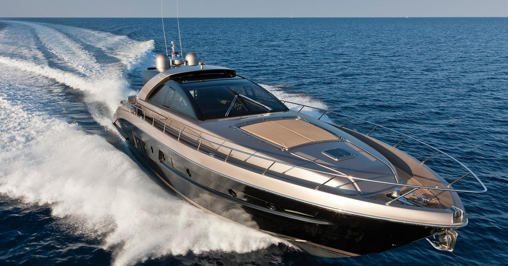
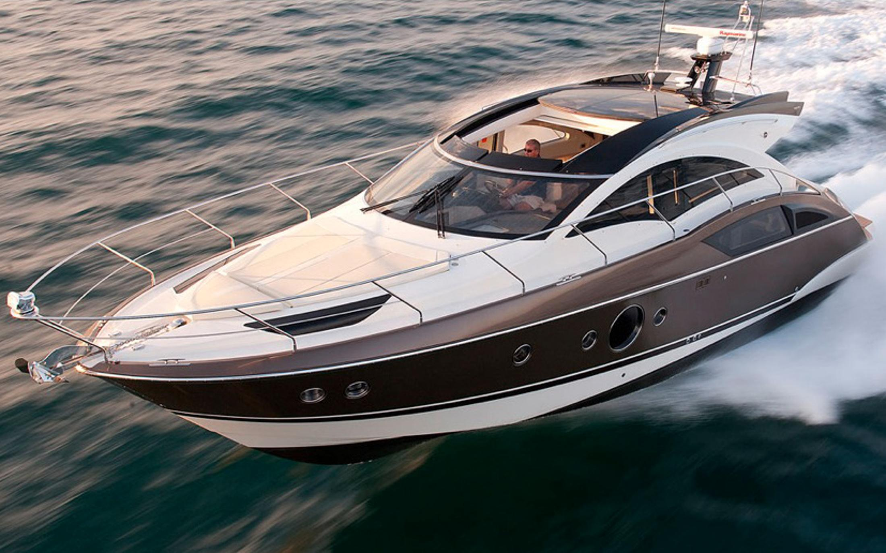

|
" Horison RP 97 " - Цена от $6 800 000 |
Своим рождением тайваньская верфь Horizon Yachts обязана конструктору Джону Лу, который смог создать и вывести на мировой рынок серьезный бренд, быстро снискавший солидную репутацию. Сегодня Horizon Yachts — первый и единственный азиатский член Ассоциации суперяхтенных верфей (SYBAss) и пятая по размеру верфь в мире из тех, что строят частные суда класса «люкс». Компания работает в индустрии уже 28 лет: за это время она создала более 160 уникальных суперяхт и почти 600 моторных яхт средней длины. Horizon Yachts обеспечивает треть объема экспорта яхт в Тайване и восемь лет подряд удостаивалась титула «Лучшего производителя моторных яхт в Азии». Верфь обладает собственным штатом инженеров и дизайнеров, которые разрабатывают суда, соответствующие требованиям DNV и MCA. Стандартизированное производство и современные системы обмена данными позволяют ей изготавливать яхты в короткие сроки без потери в качестве, учитывая при этом пожелания клиентов.
" Где купить? " Jonacor Marine: Россия, Санкт-Петербург
 |
" Jeanneau Leader 40 " - Цена от €222 300 |
Верфь Jeanneau входит в состав консорциума Beneteau, но ведет независимую техническую политику, выпуская яхты, никак не пересекающиеся с модельным рядом Beneteau. Как ни странно, но руководство самого консорциума до недавнего времени заставляло обе верфи конкурировать друг с другом в секторе массовых лодок. В настоящий же момент предпринимается попытка "развести" линейки парусных и моторных лодок обеих верфей по разным рыночным нишам. Отчетливая тенденция современной технической политики Jeanneau — стараться совмещать большие внутренние объемы с удобством управления яхтой. Во Франции принято считать, что яхты Jeanneau по качеству и престижности стоят чуть выше своих сестер из Beneteau: сами французы сравнивают первую верфь с автомобилями Peugeot, а вторую — c Renault.
Leader 40 — это Porsche на воде. Яхта представляет собой крайне быстрое спортивное судно. Отличительная особенность яхты — отличная управляемость в любых режимах движения и отсутствие малейшей склонности к срыву на предельных скоростях, за что отвечают два глубоко расположенных поперечных редана. Обилие снастей для тонкой настройки делают эту лодку крайне привлекательной для любого опытного спортсмена.
" Где купить? " Prestige Yachts: Россия, Москва
 |
" Pershing 92 " - Цена от €7 140 000 |
Pershing 92 — лодка для тех, кто не желает искать компромисс между скоростью и комфортом. При таком размере вес яхты составляет около 100 тонн, и заставить такую махину перемещаться по воде со скоростью, скажем, 40 узлов, совсем не просто. Благодаря относительной легкости конструкций, большим двигателям и полупогружным винтам такое становится возможным.
Даже наличие верхней палубы (флайбридж сдвинут ближе к корме, чтобы не нарушать линии профиля яхты и не создавать дополнительного сопротивления) не мешает лодке показывать впечатляющие скоростные качества — 41 узел максимальная скорость и 38 — круизная. Конечно, при таких скоростях дальность хода без дозаправки не превышает 385 миль, однако для многих популярных акваторий этого достаточно, чтобы максимально эффективно перемещаться из точки, А в точку B.Например, из Барселоны до Балеар, из Майами до Багам или из Порто-Черво до Рима.
Crew mess расположен в кормовой части яхты и имеет отдельный вход. Салон главной палубы объединяет диванную зону и столовую и, при открытой перегородке, продолжается в кормовом кокпите еще одной обеденной зоной и чилаутом-лежаком. Так же имеется верхняя палуба, где кроме углового дивана со столиком предусмотрен второй пост управления яхтой.
" Где купить? " Burevestnik Group: Россия, Москва
|  |
" Azimut S7 " - Цена от €5 350 000 |
Azimut Yachts представляет высокотехнологичную моторную яхту AZIMUT S7 с тремя силовыми установками Inboard Performance System (IPS) по 800 л.с. каждая. При создании нового флагмана S-серии широко использовалось карбоновое волокно, которое обладает исключительно высокой прочностью и малым весом.
Судно способно удивить своим уникальным экстерьером и интерьером. Взгляд приковывает форма хайтек корпуса, на котором нестандартные окна выполнены в форме багетной огранки алмазов. Каюта владельца и три гостевых каюты выполнены в ультрасовременном стиле в светлых тонах. Новый S7 может похвастаться смелыми решениями в отношении планировок. На кокпите расположилась столовая группа по левому борту, что оптимизировало пространство и позволило гостям обедать на открытом воздухе. В каюте владельца необычная планировка – стойка с TV буквально разрезает пространство, создавая сложную конфигурацию каюты.
На S7 реализован объемный гараж со схемой поворотной плавательной платформы.Дверь гаража быстро превращается в просторную зону для загорания и открывает доступ в кормовой гараж, в котором помещаются одновременно тендер и гидроцикл. Возможны две версии исполнения S7 - с флайбриджем и без.
" Где купить? " Azimut Yachts Russia: Россия, Москва
|  |
" Jeanneau NC11 " - Цена от $213 300 |
В 2009 году французская верфь Jeanneau запустила новую модельную линейку круизных яхт скандинавского типа под названием New Concept. Успех первых моделей NC 11 и NC 9 (названных «Европейскими лодками года» в 2011 и 2012 году) послужил стартом к разработке новой яхты.
Моторная яхта французской верфи Jeanneau — 11-метровая Jaenneau NC 11 — была впервые показана на бот-шоу в Дюссельдорфе в 2011 году. И в этом же году лодка завоевала награду European Power Boat of the Year. Jeanneau NC 11 задумывалась как лодка для северных вод. Однако ее эргономичность и ходовые качества в сочетании с привлекательной ценой быстро оценили и яхтсмены Средиземноморья. На борту Jeanneau NC 11 большая часть мебели может использоваться в нескольких конфигурациях: например, обеденная зона в салоне легко превращается в дополнительное огромное спальное место. Умение инженеров Jeanneau, изначально специализирующихся на парусниках, работать с пространством выразилось в наличии на нижней палубе двух полноценных кают с просторной ванной комнатой. И это не была бы французская лодка, если бы в бортах не было отведено место для хранения вина.
" Где купить? " Prestige Yachts: Россия, Москва
 |
" Magnum 100" - Цена от $15 220 000 |